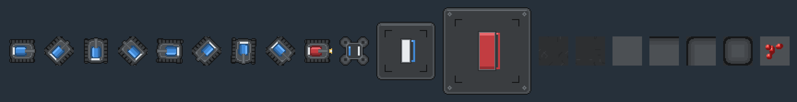
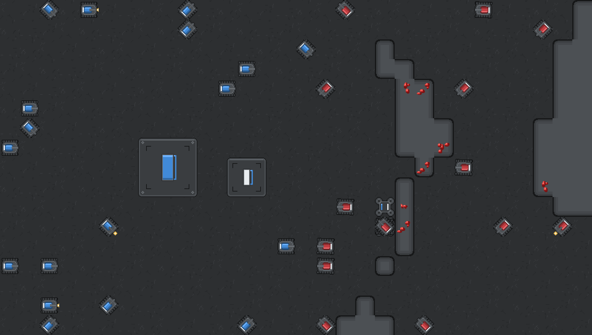
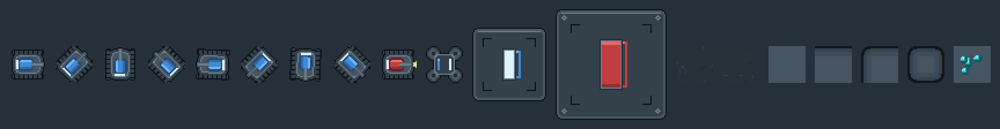
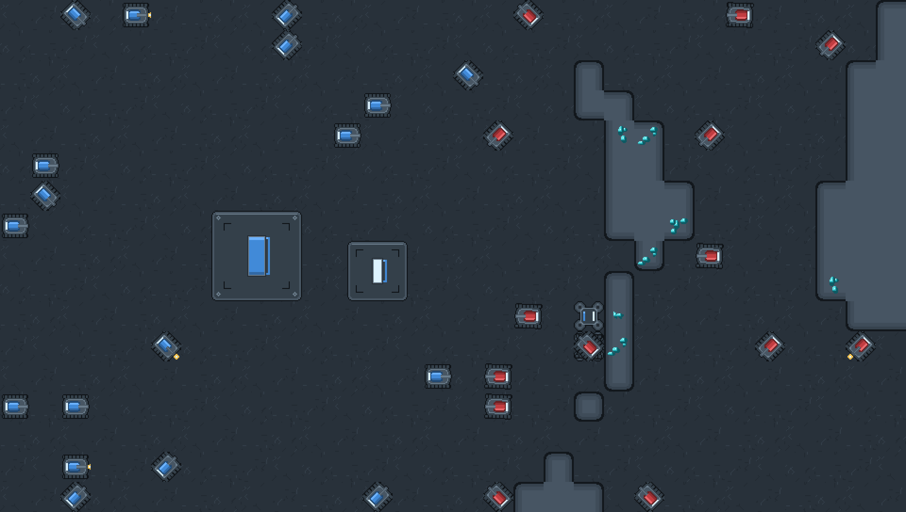
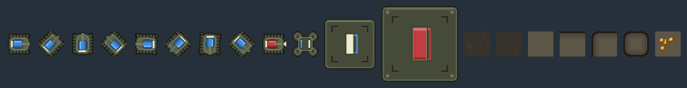
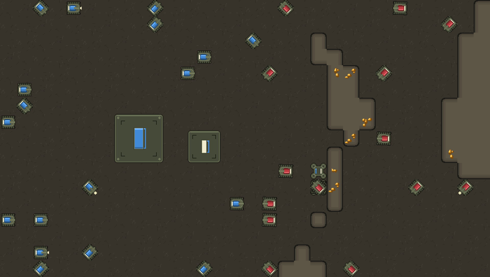
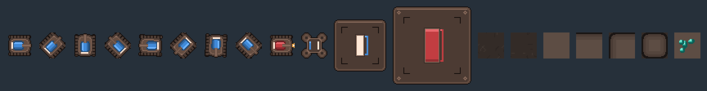
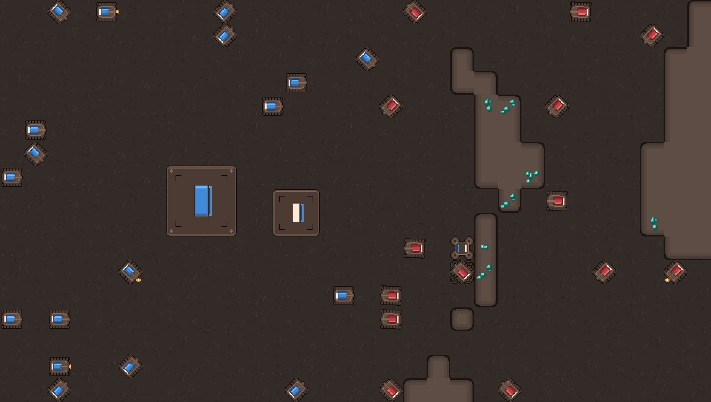
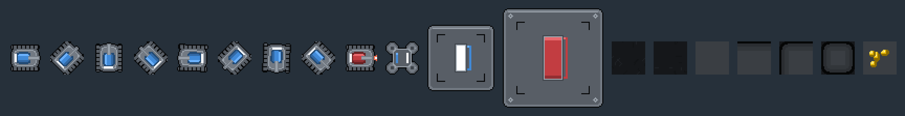
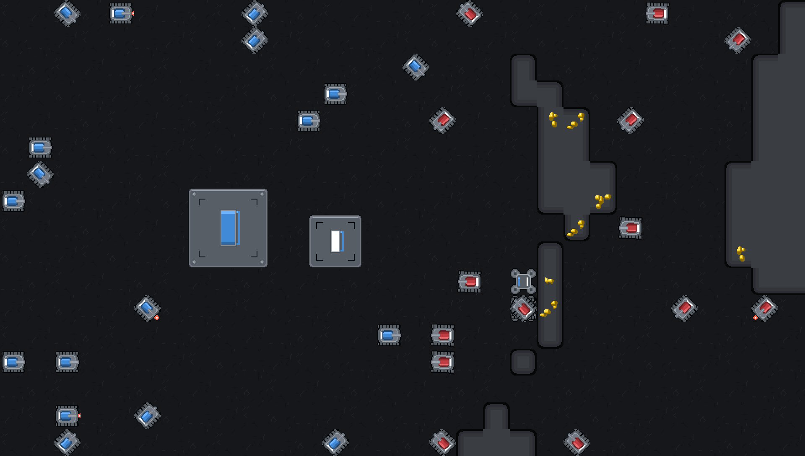

WAR-2D style samples
Everything below is drawn by code in the style of the current placeholder art, at 32 px per tile (the current art's size; the earlier prototypes were 16 px). Each section is one palette: same shapes, different colours. Units and buildings show player colours 1 (blue) and 2 (red); their team-coloured parts follow whatever colour the player picks.
Pick a palette, or mix and match (for example, Gunmetal machines on Charcoal ground), or name any colour to change: each swatch below is one colour role.
1Charcoal
The current placeholders, cleaned up: neutral charcoal machines and stone, red gems.
Outline
#121314
Body 0
#2A2C2E
Body 1
#3A3D40
Body 2
#4D5155
Body 3
#6A6F74
Lamp
#E8ECEF
Floor 0
#26282A
Floor 1
#2D2F31
Floor 2
#383A3D
Rock 0
#161718
Rock 1
#3A3D40
Rock 2
#44474B
Rock 3
#4C5054
Gem 0
#7A1414
Gem 1
#C62828
Gem 2
#F0524A
Gem 3
#FFC2B8
Warn
#F2C14E
Close up (3×): the Tank in its 8 facings, the Tank firing, Miner, Small Unit Spawner, HQ, two floor tiles, rock (enclosed, open to the north, open on two sides, isolated), gem rock

In game (2×, near the default zoom): a real generated map with an HQ, a spawner, miners and two armies

2Gunmetal
Cooler blue-grey metal and slate, cyan gems: matches the v0.6 UI's steel panels.
Outline
#0E1216
Body 0
#252C33
Body 1
#34404A
Body 2
#485663
Body 3
#6B7D8C
Lamp
#DDF3FF
Floor 0
#222A32
Floor 1
#28313A
Floor 2
#333E49
Rock 0
#12171C
Rock 1
#36424E
Rock 2
#3F4C59
Rock 3
#475563
Gem 0
#0E5A63
Gem 1
#1FA6B0
Gem 2
#5FE3E6
Gem 3
#D6FFFF
Warn
#F2C14E
Close up (3×): the Tank in its 8 facings, the Tank firing, Miner, Small Unit Spawner, HQ, two floor tiles, rock (enclosed, open to the north, open on two sides, isolated), gem rock

In game (2×, near the default zoom): a real generated map with an HQ, a spawner, miners and two armies

3Olive drab
Military olive machines on dusty brown-grey ground, amber gems.
Outline
#15140F
Body 0
#33362A
Body 1
#464A38
Body 2
#5C6249
Body 3
#7C8463
Lamp
#F1EBD0
Floor 0
#302C25
Floor 1
#37332B
Floor 2
#433E35
Rock 0
#1C1A16
Rock 1
#4A4438
Rock 2
#544D40
Rock 3
#5D5647
Gem 0
#7A4A0C
Gem 1
#D08A1E
Gem 2
#F6BE4A
Gem 3
#FFE9B0
Warn
#E8E2B0
Close up (3×): the Tank in its 8 facings, the Tank firing, Miner, Small Unit Spawner, HQ, two floor tiles, rock (enclosed, open to the north, open on two sides, isolated), gem rock

In game (2×, near the default zoom): a real generated map with an HQ, a spawner, miners and two armies

4Rust
Warm brown-grey industrial with oxidised metal, teal gems for contrast.
Outline
#150F0D
Body 0
#382C27
Body 1
#4C3B33
Body 2
#644D41
Body 3
#87695A
Lamp
#FFE8D6
Floor 0
#2C2522
Floor 1
#332B27
Floor 2
#3F3631
Rock 0
#1A1513
Rock 1
#4A3C35
Rock 2
#54453D
Rock 3
#5D4D44
Gem 0
#0E5E55
Gem 1
#1F9E8C
Gem 2
#5FE0C8
Gem 3
#D8FFF4
Warn
#F2A33A
Close up (3×): the Tank in its 8 facings, the Tank firing, Miner, Small Unit Spawner, HQ, two floor tiles, rock (enclosed, open to the north, open on two sides, isolated), gem rock

In game (2×, near the default zoom): a real generated map with an HQ, a spawner, miners and two armies

5Night ops
High contrast: near-black ground and rock, lighter machines that pop, yellow gems.
Outline
#060708
Body 0
#40454B
Body 1
#585E66
Body 2
#737A83
Body 3
#9AA2AB
Lamp
#FFFFFF
Floor 0
#111315
Floor 1
#15171A
Floor 2
#1E2125
Rock 0
#050606
Rock 1
#2A2D31
Rock 2
#32363A
Rock 3
#3A3E43
Gem 0
#8A6A00
Gem 1
#E0B000
Gem 2
#FFE04A
Gem 3
#FFF6C4
Warn
#FF6B4A
Close up (3×): the Tank in its 8 facings, the Tank firing, Miner, Small Unit Spawner, HQ, two floor tiles, rock (enclosed, open to the north, open on two sides, isolated), gem rock

In game (2×, near the default zoom): a real generated map with an HQ, a spawner, miners and two armies
